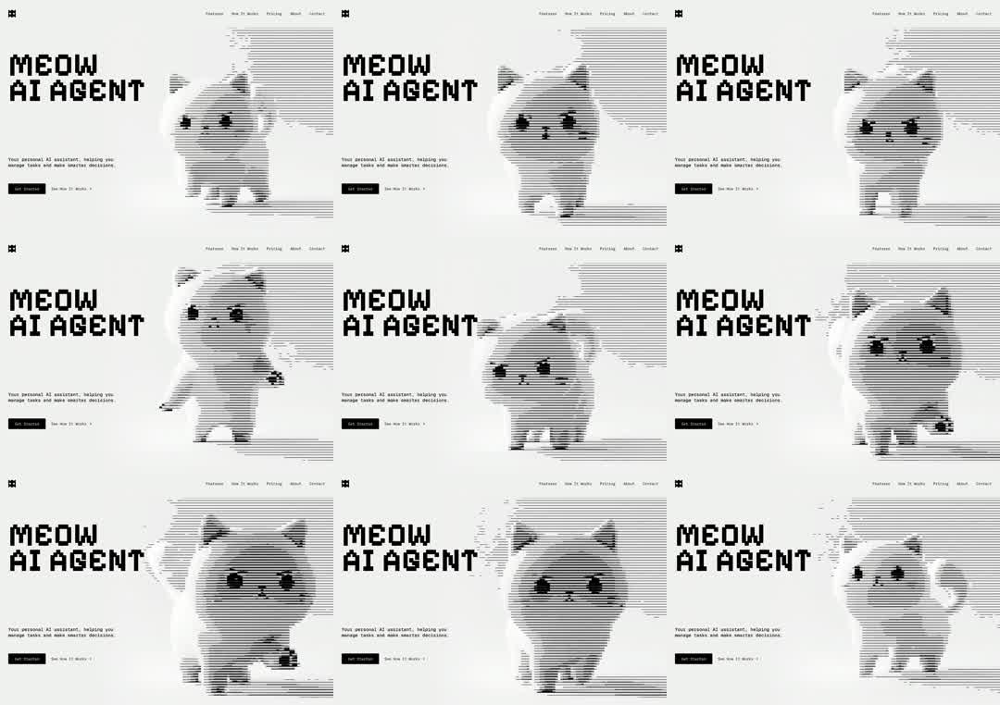

Landing hero for 'MEOW AI AGENT': pixel-font headline + nav on the left, and a cat mascot rendered entirely in animated horizontal scanline halftone (each frame of a walking/waving cat redrawn as line dither) with occasional glitch jitter.
Media
Frame-by-frame

0-20%
Hero locked: pixel type 'MEOW AI AGENT', top nav, subline + 2 buttons; the cat stands right, drawn only from horizontal black lines of varying thickness (1-bit scanline dither).
20-45%
Cat animation frame changes - paw raise/wave; the whole figure is recomputed as scanlines so edges shimmer with line flicker.
45-70%
Cat cycles walk/turn poses; occasional glitch: scanlines displace horizontally for a frame or two (RGB-less datamosh jitter).
70-100%
Pose loop continues (sit, tail curl, wave); type and layout stay perfectly still - all motion lives in the scanline cat.
Build prompt
Rebuild this interaction 1:1: a landing hero for "MEOW AI AGENT" - pixel-font headline and nav on the left, and a cat mascot on the right rendered entirely in animated horizontal scanline halftone: each pose of a walking/waving cat is redrawn as line dither, with occasional glitch bursts.
## Integration
Integration: stack-agnostic spec - springs given as stiffness/damping, timed motions as duration + curve, canvas/shader notes are perf guidance only; map every value to your framework and animation library of choice.
## Scene
Light hero. Left: pixel-font headline "MEOW AI AGENT", top nav, subline, 2 buttons. Right: the cat figure - drawn only from horizontal black lines of varying thickness (1-bit scanline dither).
## Motion spec
Pattern: autoplay pose loop + random glitches.
- Cat animation: frame swaps at ~4-6fps (deliberately steppy - use steps(), no interpolation between poses). Poses: stand, paw raise/wave, walk, turn, sit, tail curl.
- Every pose change recomputes the whole figure as scanlines, so edges shimmer with line flicker.
- Glitch bursts: every ~3-5s, scanlines displace horizontally for 1-2 frames (datamosh jitter, no RGB split - stays 1-bit).
- Type, nav, buttons: perfectly still. All motion lives in the cat.
## Calibration
- 4-6fps is a style, not a limitation - resist smoothing it.
- Glitch: 1-2 frames only, displacement a few percent of width; more becomes noise.
- Scanline count fixed; only thickness varies per frame. Line flicker at edges is desired texture.
## Reduced motion
Cat holds its standing pose as a static scanline illustration; no glitches.
## Don't miss
- The cat is scanlines at all times - no solid silhouette frames mixed in.
- Glitch stays monochrome; an RGB-split would betray the 1-bit aesthetic.
- The stark stillness of the type next to the flickering cat is the composition.